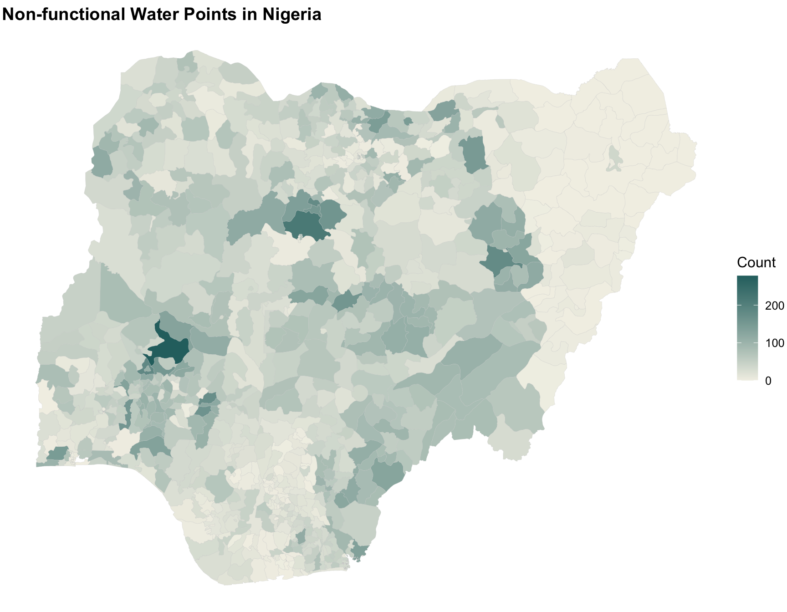
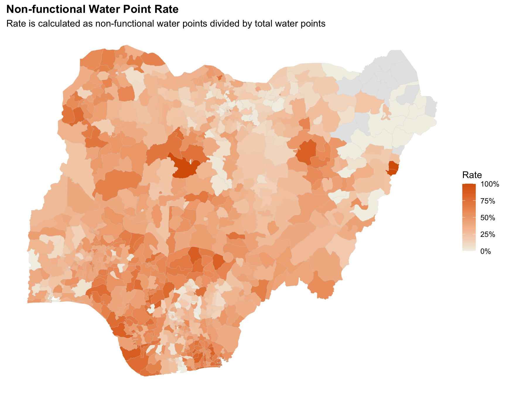
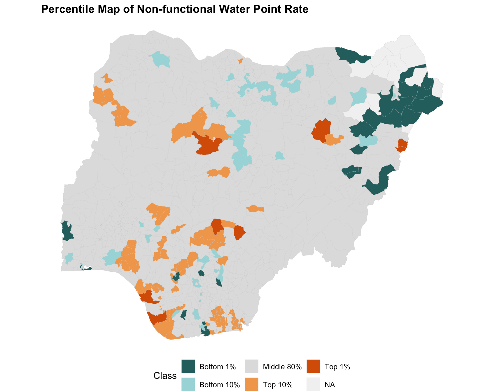
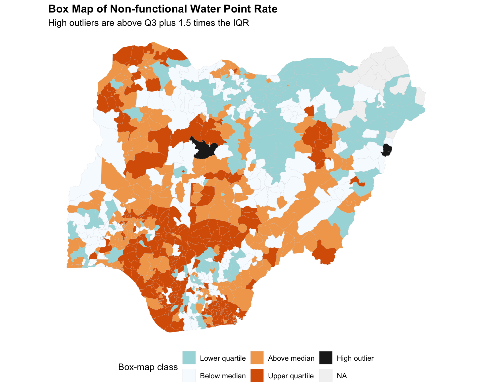
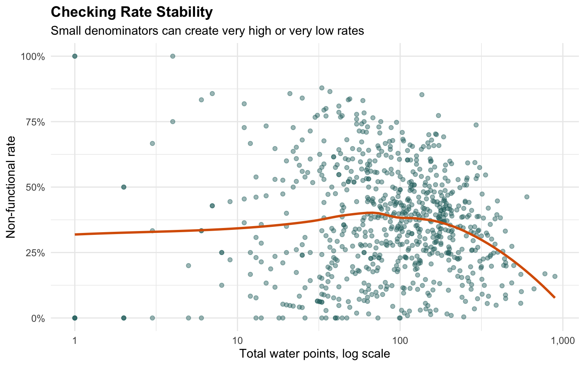

if (!requireNamespace("pacman", quietly = TRUE)) {
install.packages("pacman", repos = "https://cloud.r-project.org")
}
pacman::p_load(
tidyverse,
sf,
scales,
knitr
)Hands-on_Ex09c
1 Analytical Mapping
1.1 Overview
Analytical mapping goes beyond displaying a single count. It uses derived measures, classification rules and outlier logic to support comparison across areas.
In this hands-on exercise, Nigerian water point data is used to map non-functional water points. The exercise starts with a count map, then moves to rate maps, percentile maps and box maps.
By the end of this exercise, we should be able to:
- import a prepared
sfobject from an RDS file; - derive functional and non-functional rates;
- map counts and rates;
- build percentile classes;
- create a box-map classification based on the interquartile range;
- identify areas that are unusually high or low.
1.2 Installing and launching R packages
1.3 Importing data
nga_path <- "data/rds/NGA_wp (1).rds"
if (!file.exists(nga_path)) {
stop("NGA_wp (1).rds is missing from data/rds.")
}
nga_wp <- readRDS(nga_path) %>%
st_make_valid()
glimpse(nga_wp)Rows: 774
Columns: 9
$ ADM2_EN <chr> "Aba North", "Aba South", "Abadam", "Abaji", "Abak", …
$ ADM2_PCODE <chr> "NG001001", "NG001002", "NG008001", "NG015001", "NG00…
$ ADM1_EN <chr> "Abia", "Abia", "Borno", "Federal Capital Territory",…
$ ADM1_PCODE <chr> "NG001", "NG001", "NG008", "NG015", "NG003", "NG011",…
$ geometry <POLYGON [m]> POLYGON ((548795.5 119641, ..., POLYGON ((547…
$ total_wp <int> 17, 71, 0, 57, 48, 233, 34, 119, 152, 66, 39, 135, 63…
$ wp_functional <int> 7, 29, 0, 23, 23, 82, 16, 72, 79, 18, 25, 54, 28, 55,…
$ wp_nonfunctional <int> 9, 35, 0, 34, 25, 42, 15, 33, 62, 26, 13, 73, 35, 36,…
$ wp_unknown <int> 1, 7, 0, 0, 0, 109, 3, 14, 11, 22, 1, 8, 0, 37, 88, 1…nga_wp %>%
st_drop_geometry() %>%
head(8) %>%
knitr::kable(format = "html")| ADM2_EN | ADM2_PCODE | ADM1_EN | ADM1_PCODE | total_wp | wp_functional | wp_nonfunctional | wp_unknown |
|---|---|---|---|---|---|---|---|
| Aba North | NG001001 | Abia | NG001 | 17 | 7 | 9 | 1 |
| Aba South | NG001002 | Abia | NG001 | 71 | 29 | 35 | 7 |
| Abadam | NG008001 | Borno | NG008 | 0 | 0 | 0 | 0 |
| Abaji | NG015001 | Federal Capital Territory | NG015 | 57 | 23 | 34 | 0 |
| Abak | NG003001 | Akwa Ibom | NG003 | 48 | 23 | 25 | 0 |
| Abakaliki | NG011001 | Ebonyi | NG011 | 233 | 82 | 42 | 109 |
| Abeokuta North | NG028001 | Ogun | NG028 | 34 | 16 | 15 | 3 |
| Abeokuta South | NG028002 | Ogun | NG028 | 119 | 72 | 33 | 14 |
1.4 Basic Choropleth Mapping
1.4.1 Visualising distribution of non-functional water point
ggplot(nga_wp) +
geom_sf(aes(fill = wp_nonfunctional), colour = "grey80", linewidth = 0.05) +
scale_fill_gradient(
low = "#F2F0E6",
high = "#2A6F6F",
labels = comma
) +
labs(
title = "Non-functional Water Points in Nigeria",
fill = "Count"
) +
theme_void(base_size = 12) +
theme(
plot.title = element_text(face = "bold"),
legend.position = "right"
)
The count map highlights areas with more non-functional water points. However, areas with many total water points can naturally have larger counts, so rate maps are needed for fairer comparison.
1.5 Choropleth Map for Rates
1.5.1 Deriving proportion of functional and non-functional water points
nga_rate <- nga_wp %>%
mutate(
pct_functional = if_else(total_wp > 0, wp_functional / total_wp, NA_real_),
pct_nonfunctional = if_else(total_wp > 0, wp_nonfunctional / total_wp, NA_real_),
pct_unknown = if_else(total_wp > 0, wp_unknown / total_wp, NA_real_)
)nga_rate %>%
st_drop_geometry() %>%
select(ADM2_EN, ADM1_EN, total_wp, wp_functional, wp_nonfunctional, pct_nonfunctional) %>%
arrange(desc(pct_nonfunctional)) %>%
head(10) %>%
mutate(pct_nonfunctional = percent(pct_nonfunctional, accuracy = 0.1)) %>%
knitr::kable(format = "html")| ADM2_EN | ADM1_EN | total_wp | wp_functional | wp_nonfunctional | pct_nonfunctional |
|---|---|---|---|---|---|
| Chikun | Kaduna | 4 | 0 | 4 | 100.0% |
| Mubi North | Adamawa | 1 | 0 | 1 | 100.0% |
| Mubi South | Adamawa | 1 | 0 | 1 | 100.0% |
| Ekeremor | Bayelsa | 33 | 4 | 29 | 87.9% |
| Omala | Kogi | 37 | 5 | 32 | 86.5% |
| Gwer West | Benue | 21 | 2 | 18 | 85.7% |
| Warri South West | Delta | 7 | 1 | 6 | 85.7% |
| Dukku | Gombe | 136 | 20 | 116 | 85.3% |
| Eastern Obolo | Akwa Ibom | 25 | 4 | 21 | 84.0% |
| Ika | Akwa Ibom | 49 | 8 | 41 | 83.7% |
1.5.2 Plotting map of rate
ggplot(nga_rate) +
geom_sf(aes(fill = pct_nonfunctional), colour = "grey80", linewidth = 0.05) +
scale_fill_gradient(
low = "#F2F0E6",
high = "#D95F02",
labels = percent,
na.value = "grey90"
) +
labs(
title = "Non-functional Water Point Rate",
subtitle = "Rate is calculated as non-functional water points divided by total water points",
fill = "Rate"
) +
theme_void(base_size = 12) +
theme(
plot.title = element_text(face = "bold"),
legend.position = "right"
)
1.6 Extreme Value Maps
1.6.1 Percentile Map
Percentile mapping highlights values at the tails of a distribution. The classes below separate the bottom 1 percent, bottom 10 percent, middle range, top 10 percent and top 1 percent.
nga_percentile <- nga_rate %>%
mutate(
pct_rank_nonfunctional = percent_rank(pct_nonfunctional),
percentile_class = case_when(
is.na(pct_rank_nonfunctional) ~ NA_character_,
pct_rank_nonfunctional <= 0.01 ~ "Bottom 1%",
pct_rank_nonfunctional <= 0.10 ~ "Bottom 10%",
pct_rank_nonfunctional < 0.90 ~ "Middle 80%",
pct_rank_nonfunctional < 0.99 ~ "Top 10%",
TRUE ~ "Top 1%"
),
percentile_class = factor(
percentile_class,
levels = c("Bottom 1%", "Bottom 10%", "Middle 80%", "Top 10%", "Top 1%")
)
)ggplot(nga_percentile) +
geom_sf(aes(fill = percentile_class), colour = "grey80", linewidth = 0.05) +
scale_fill_manual(
values = c(
"Bottom 1%" = "#2A6F6F",
"Bottom 10%" = "#A8DADC",
"Middle 80%" = "grey88",
"Top 10%" = "#F2A65A",
"Top 1%" = "#D95F02"
),
na.value = "grey95"
) +
labs(
title = "Percentile Map of Non-functional Water Point Rate",
fill = "Class"
) +
theme_void(base_size = 12) +
theme(
plot.title = element_text(face = "bold"),
legend.position = "bottom"
)
1.6.2 Box map
A box map applies the logic of a boxplot to a map. It highlights areas beyond the interquartile range as possible spatial outliers.
rate_values <- nga_rate$pct_nonfunctional
q1 <- quantile(rate_values, 0.25, na.rm = TRUE)
q2 <- quantile(rate_values, 0.50, na.rm = TRUE)
q3 <- quantile(rate_values, 0.75, na.rm = TRUE)
iqr_value <- q3 - q1
lower_fence <- q1 - 1.5 * iqr_value
upper_fence <- q3 + 1.5 * iqr_value
nga_box <- nga_rate %>%
mutate(
box_class = case_when(
is.na(pct_nonfunctional) ~ NA_character_,
pct_nonfunctional < lower_fence ~ "Low outlier",
pct_nonfunctional < q1 ~ "Lower quartile",
pct_nonfunctional < q2 ~ "Below median",
pct_nonfunctional < q3 ~ "Above median",
pct_nonfunctional <= upper_fence ~ "Upper quartile",
TRUE ~ "High outlier"
),
box_class = factor(
box_class,
levels = c(
"Low outlier",
"Lower quartile",
"Below median",
"Above median",
"Upper quartile",
"High outlier"
)
)
)ggplot(nga_box) +
geom_sf(aes(fill = box_class), colour = "grey80", linewidth = 0.05) +
scale_fill_manual(
values = c(
"Low outlier" = "#7570B3",
"Lower quartile" = "#A8DADC",
"Below median" = "#F7FBFF",
"Above median" = "#F2A65A",
"Upper quartile" = "#D95F02",
"High outlier" = "#1F1F1F"
),
na.value = "grey95"
) +
labs(
title = "Box Map of Non-functional Water Point Rate",
subtitle = "High outliers are above Q3 plus 1.5 times the IQR",
fill = "Box-map class"
) +
theme_void(base_size = 12) +
theme(
plot.title = element_text(face = "bold"),
legend.position = "bottom"
)
1.7 My Extension: Rate versus denominator
Rate maps can exaggerate small denominators. The scatterplot below checks whether high non-functional rates are attached to areas with very few total water points.
nga_rate %>%
st_drop_geometry() %>%
filter(total_wp > 0) %>%
ggplot(aes(total_wp, pct_nonfunctional)) +
geom_point(alpha = 0.45, colour = "#2A6F6F") +
geom_smooth(method = "loess", se = FALSE, colour = "#D95F02") +
scale_x_log10(labels = comma) +
scale_y_continuous(labels = percent) +
labs(
title = "Checking Rate Stability",
subtitle = "Small denominators can create very high or very low rates",
x = "Total water points, log scale",
y = "Non-functional rate"
) +
theme_minimal(base_size = 12) +
theme(plot.title = element_text(face = "bold"))
1.8 Key Takeaways
- Count maps and rate maps answer different questions.
- Percentile maps are useful for highlighting distribution tails.
- Box maps apply outlier logic to spatial data.
- Denominators matter: a high rate in a very small area should be interpreted carefully.
1.9 References
- R4VA chapter: https://r4va.netlify.app/chap23